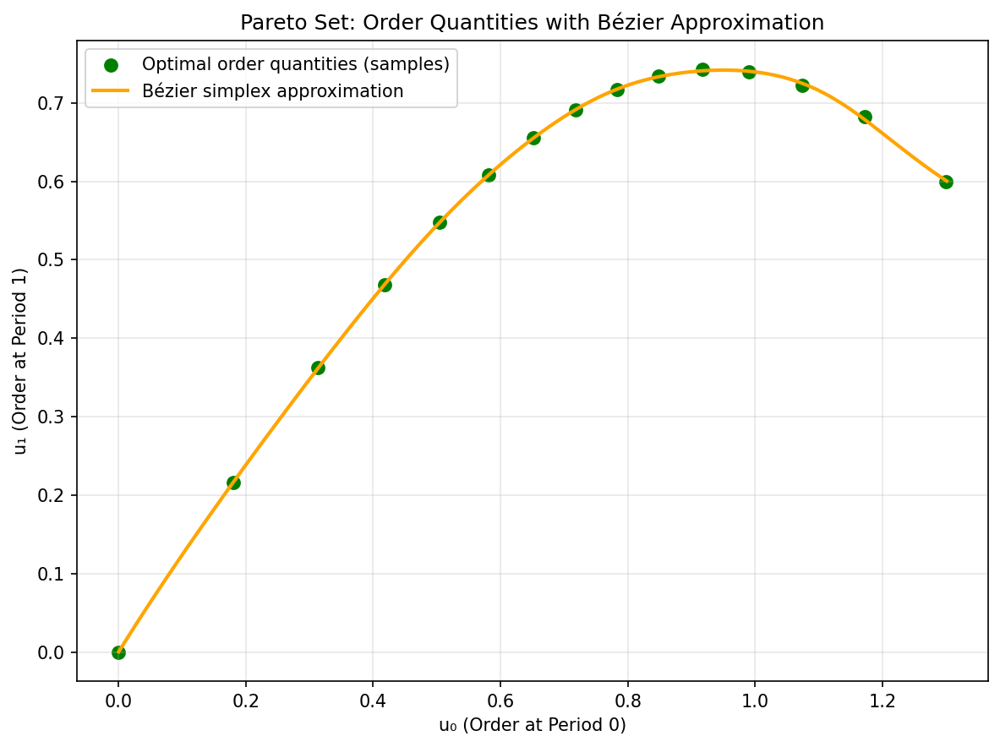
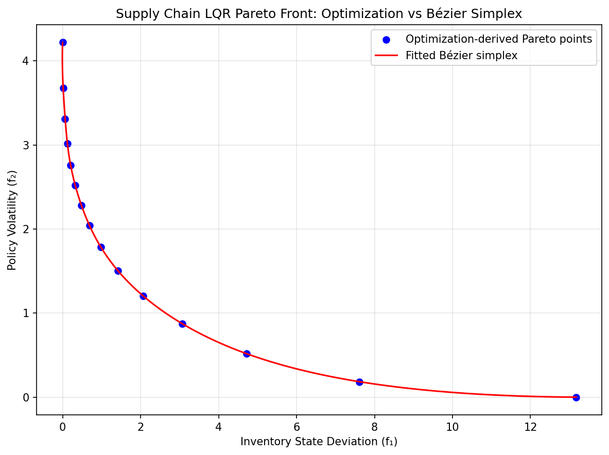

Supply Chain and Logistics Optimization
In modern supply chain management (SCM) and operations research, isolating physical material logistics from global financial flows regularly causes massive inefficiencies. Supply Chain Finance algorithms attempt to computationally integrate factory outputs, inventory storage, and monetary streams to achieve a single unified, profitable coordination strategy.
Recent operational formulations actively model this extensive corporate balancing act as a purely convex, constrained, finite-horizon Linear Quadratic Regulator (LQR) problem over discrete stages.
The optimization generally maps out three tightly competing operational objectives across the logistics network:
Where \(X_k\) represents the aggregate cash and inventory states, constrained to remain close to their targets without causing disruptive shortages, and \(U_k\) are the direct financial interventions or operational accelerations.
For manufacturing processes and logistics, abrupt disruptions in financing inputs or delivery capacities incur massive overheads, making the penalization of policy volatility (\(\|\Delta U_k\|_S^2\)) practically vital for securing stable operational margins.
With linear dynamics, eliminating the states gives quadratic objectives in the control sequence. A positive-definite input penalty gives positive curvature in every control direction. A state or difference penalty does so only when its map from controls has full column rank. Convexity of the feasible set must also be checked if inventory or ordering limits are added.
A Bézier surrogate makes it possible to explore the modeled priorities continuously after offline reference solves. It approximates the decisions for fixed demand and dynamics; a new supply shock is a change of problem data unless it is included explicitly in the surrogate’s parameter domain.
Numerical Experiments
We demonstrate Bézier simplex fitting on a two-objective inventory LQR problem balancing state deviation against ordering cost and policy volatility over a horizon of \(H = 5\) periods.
Problem Setup:
Ordering decisions: \(U = [u_0, u_1, u_2, u_3, u_4] \in \mathbb{R}^5\)
Perishable inventory dynamics: \(x(k+1) = 0.7\,x(k) + u_k - 0.3\), where 30% of the stock spoils each period and the demand is \(0.3\) per period
Initial inventory \(x(0) = 0\), target \(x^* = 1\)
Competing objectives (with \(u_{-1} = 0\)):
Both objectives are strongly convex quadratics with comparable curvature, so the weighted-sum solution \(U^*(w)\) is a smooth rational function of \(w\) without poles near the weight simplex. Here the difference penalty includes the fixed previous order \(u_{-1}=0\). Its difference matrix is invertible, so even that penalty alone is positive definite. If the initial difference were omitted, constant order sequences would instead form a nullspace. Boundary conventions matter when reasoning about curvature and endpoint solutions.
Experiment Procedure:
Sample 15 weight vectors \(w = (w_1, w_2)\) on the 1-simplex from \((1,0)\) to \((0,1)\).
For each \(w\), solve \(U^*(w) = \arg\min_U [w_1 f_1(U) + w_2 f_2(U)]\) using L-BFGS-B.
Collect the Pareto front points \((f_1(U^*(w)), f_2(U^*(w)))\).
Fit a degree-8 Bézier simplex to the weight–objective pairs and another to the weight–decision pairs.
Evaluate the fitted Bézier curve on 101 test weights.
The maximum error on the test weights is about \(0.03\), i.e., 0.2% of the range of \(f_1\).
 |
 |
Pareto set. |
Pareto front. |


The complete example script is available at examples/generate_supply_chain_pareto.py.
Encode a horizon as multiple outputs
One input row is a pair of priority weights [w1, w2]. One decision output
row is the complete five-period order sequence. Time is an output index in
this experiment, rather than another input coordinate. Fitting each period
as a separate observation at the same weight would lose the intended
vector-valued response. Samples(weights, orders) should have shapes
(n, 2) and (n, 5).
The state trajectory follows by rolling out the inventory dynamics from the fixed initial stock. The first objective rewards sufficient inventory, while the second rewards small, slowly changing orders. At the state-priority endpoint, matching the target requires replenishment; at the order-cost endpoint, zero orders minimize the cost even though inventory then falls below its target. Negative inventory is permitted by this unconstrained toy model and can be read as backlog, not a hard stock-availability guarantee.
Why a higher degree is used
After eliminating states, write the objectives as
For a nonsingular weighted Hessian, the reference solution is
This is generally rational in the weights. A degree-eight curve is an approximation choice for the stated horizon and dynamics, rather than an exact consequence of the quadratic objectives. It has nine controls per output. Fifteen training weights provide more rows than controls, but their placement and numerical rank still matter. Inspect the data diagnostics and compare a lower degree on held-out weights before using the larger model.
Check orders and reconstructed inventories
Run python examples/generate_supply_chain_pareto.py to reproduce the
reference solves and plots. Evaluate the decision map at new weights,
roll out all five states, and recompute both objectives from those states
and orders. Check each period’s error; a projection onto two order columns
can conceal an error later in the horizon. A separately fitted objective
map can disagree with objectives recomputed from the decision map.
If the reference model is extended with nonnegative orders, storage limits or shortage bounds, measure their violations on predicted trajectories. These constraints are not imposed by unconstrained Bézier regression. Exact endpoint controls can preserve a known extreme policy, but do not guarantee interior feasibility. See Fixed controls for what fixed controls actually constrain.
Changing demand, horizon and initial stock
The fitted model assumes the specified demand, spoilage rate, initial stock and horizon. A new horizon changes output width and requires a new model. A varying scalar initial stock or demand level can be encoded as an independent interval factor, producing a square-domain simploid. Several independent uncertain inputs need separate factors and corresponding training coverage; adding factors increases the control count multiplicatively.
Keep surrogate regularization separate from ordering and volatility costs. The former changes the fitted coefficient estimate, while the latter define the reference decisions being approximated. See Regularization and numerical evidence and Multi-Objective Model Predictive Control for the related finite-horizon workflow with a varying initial state.